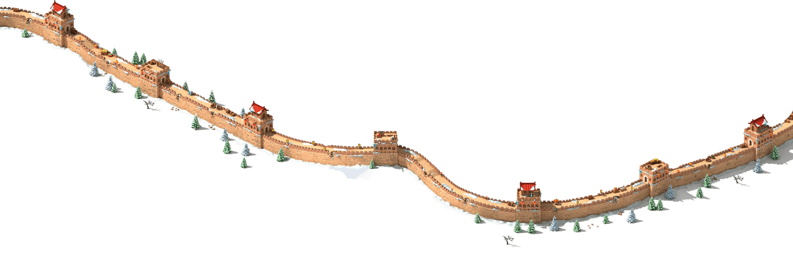
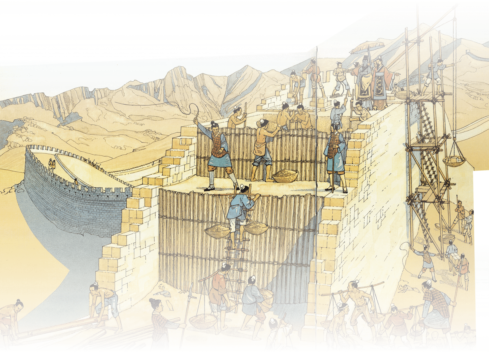

Muraille de chine
C'est quoi ?
La Grande Muraille ou muraille de Chine (en chinois Chángchéng, « la longue muraille » ; en chinois traditionnel : 長城, en caractères simplifiés 长城 ) est la plus longue construction humaine au monde : elle parcourt environ 6 700 kilomètres, de la frontière entre la Chine et la Corée, jusqu'au désert de Gobi, à l'ouest du pays.
La muraille a d'abord été construite avec de la terre, des pierres, du bois et des tuiles, puis plus tard avec des briques. Sa largeur est entre 5 et 7 mètres en moyenne et sa hauteur est entre 5 et 17 mètres. Elle possède des tours de guet et des fortifications sur toute sa longueur. Les déplacements des soldats se faisaient à l'aide de chevaux.
Une des constructions les plus longues de l'histoire.
III av J-C
XVII
21 siècles de constructions
memory a mettre